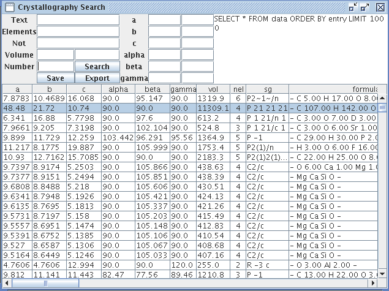

The crystallography open database UI is a java application that allows users to search for crystal structures. It is based on www.crystallography.net It is available via java web start at http://fireball.phys.wvu.edu/cod/cod.jnlp It can also operate within the Computational Science & Engineering Online, or CSEO, (www.cseo.net) environment. Users simply have to enter http://fireball.phys.wvu.edu/cod/cod.xml in the CSEO address bar or, in its next release, select it from the candidate list of applications. The interface of the crystallography database consists of several textboxes, buttons, and a table as shown below.

This picture shows the result of a null search in which no criteria are defined. Criteria entered into the Text, Elements, and Not boxes will need to be separated with spaces. For Volume and all the textboxes in the second column, the left and right textboxes correspond to minimum and maximum values. Entering an integer in the Number box will only return results whose formula contains that exact number of elements. The search button takes the SQL query in the text area and executes it. The export button will open up the selected crystal in JMol for viewing as shown here.